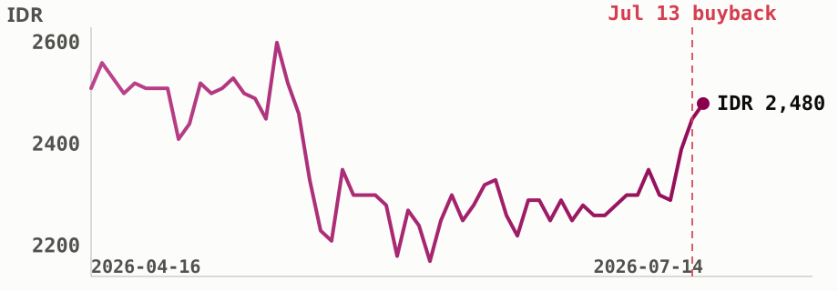

<!-- Sectors Company Deep Dive - ADRO. Issue 15 Jul 2026, data as of 14 Jul 2026. All figures from sectors.app unless cited. -->
<div style="margin:0;padding:0;background:#f2ede4;">
<table role="presentation" width="100%" cellpadding="0" cellspacing="0" style="background:#f2ede4;padding:24px 0;">
<tr><td align="center">
<table role="presentation" width="600" cellpadding="0" cellspacing="0" style="width:600px;max-width:600px;background:#fdf7ee;border-radius:14px;overflow:hidden;font-family:-apple-system,Segoe UI,Roboto,Helvetica,Arial,sans-serif;color:#1c1c1c;">

  <!-- Header -->
  <tr><td style="padding:28px 32px 8px 32px;border-bottom:2px solid #1c1c1c;">
    <table role="presentation" width="100%"><tr>
      <td style="font-size:24px;font-weight:800;color:#1c1c1c;">Sectors Company Deep Dive</td>
      <td align="right" width="110">
        
      </td>
    </tr></table>
    <div style="font-size:13px;color:#6b6b6b;padding-top:4px;">15 July 2026 &nbsp;|&nbsp; data as of 14 July 2026</div>
  </td></tr>

  <!-- Headline -->
  <tr><td style="padding:22px 32px 0 32px;">
    <div style="font-size:21px;font-weight:800;color:#1c1c1c;line-height:1.3;">ADRO tops LQ45's dividend screen as profit rebounds</div>
    <p style="font-size:14px;line-height:1.55;color:#333;margin:8px 0 0 0;">
      <a href="https://sectors.app/idx/adro" style="color:#9E0142;font-weight:700;text-decoration:none;">Alamtri Resources Indonesia ($ADRO)</a>
      just retired 589.2 million shares in a completed buyback, and days later reported a Q1
      2026 profit that beat last year's by two thirds.
    </p>
  </td></tr>

  <!-- What happened this week -->
  <tr><td style="padding:22px 32px 0 32px;">
    <div style="font-size:17px;font-weight:800;color:#1c1c1c;">What happened this week</div>
    <p style="font-size:14px;line-height:1.55;color:#333;margin:8px 0 0 0;">
      Shareholders approved a capital reduction that PT Alamtri Resources Indonesia Tbk completed
      on 13 July 2026, retiring 589,195,200 treasury shares and cutting the company's issued share
      count from 29,389,689,400 to 28,800,494,200 (Investor Daily, 13 Jul 2026). The stock traded
      up through the week on the news, and a day later
      <a href="https://sectors.app/idx/adro" style="color:#9E0142;font-weight:700;text-decoration:none;">$ADRO</a>
      disclosed its Q1 2026 numbers alongside notice that a limited-review Q2 report is coming
      under Bursa Regulation I-E: revenue of US$470.9 million, up from US$381.6 million a year
      earlier, and net profit attributable to the parent of US$128.1 million, against US$76.7
      million in Q1 2025 (Investor Daily, 14 Jul 2026). The stock closed the week at IDR 2,480, up
      from IDR 2,390 the prior Friday (sectors.app).
    </p>
  </td></tr>

  <!-- Priced below peers, earnings turning -->
  <tr><td style="padding:22px 32px 0 32px;">
    <div style="font-size:17px;font-weight:800;color:#1c1c1c;">Priced below peers, earnings turning</div>
    <p style="font-size:14px;line-height:1.55;color:#333;margin:8px 0 0 0;">
      Screening the LQ45 index by 2025 dividend distributions puts
      <a href="https://sectors.app/idx/adro" style="color:#9E0142;font-weight:700;text-decoration:none;">$ADRO</a>
      at the top of 38 constituents, a rank set by dividends already paid last year against a
      price that has since fallen, not by this week's news. What this week's buyback and earnings
      beat do change is the earnings picture going forward, and that hasn't shown up in the share
      price yet.
      <a href="https://sectors.app/idx/adro" style="color:#9E0142;font-weight:700;text-decoration:none;">$ADRO</a>
      trades at a 2026 price to earnings ratio of <b>8.6x</b> against a <b>10.4x</b> peer average
      in the same year, and its forward P/E sits at <b>4.8x</b> (sectors.app).
    </p>
    <div style="padding:16px 0 4px 0;">
      
    </div>
    <p style="font-size:12px;font-style:italic;line-height:1.5;color:#6b6b6b;margin:6px 0 0 0;">
      ADRO's 90-day price path through the completed buyback on July 13, still 8% below its March
      2026 52-week high of IDR 2,700 but 53% above its October 2025 low of IDR 1,625 (sectors.app).
    </p>
  </td></tr>

  <!-- From a 2025 slump to a Q1 rebound -->
  <tr><td style="padding:22px 32px 0 32px;">
    <div style="font-size:17px;font-weight:800;color:#1c1c1c;">From a 2025 slump to a Q1 rebound</div>
    <p style="font-size:14px;line-height:1.55;color:#333;margin:8px 0 0 0;">
      Alamtri's 2025 was a down year before this rebound: full-year EPS fell 65% to IDR 254.9
      from IDR 724.9 in 2024, as return on equity dropped to 8.9% from 25.7% the year before,
      tracking softer coal prices through the year. Q1 2026 is the first clean read against that
      base, and it moved the other way.
    </p>
    <table role="presentation" width="100%" cellpadding="0" cellspacing="0" style="margin-top:12px;font-size:13px;border-collapse:collapse;">
      <tr style="background:#fbe9d8;color:#1c1c1c;font-weight:700;">
        <td style="padding:8px 12px;">Period</td><td style="padding:8px 12px;">Revenue</td><td style="padding:8px 12px;">Net profit</td><td style="padding:8px 12px;">YoY change</td>
      </tr>
      <tr><td style="padding:8px 12px;border-bottom:1px solid #eee;">Q1 2026</td><td style="padding:8px 12px;border-bottom:1px solid #eee;">US$470.9M</td><td style="padding:8px 12px;border-bottom:1px solid #eee;">US$128.1M</td><td style="padding:8px 12px;border-bottom:1px solid #eee;color:#568475;font-weight:700;">+67% earnings, +26% revenue</td></tr>
      <tr><td style="padding:8px 12px;border-bottom:1px solid #eee;">FY2025</td><td style="padding:8px 12px;border-bottom:1px solid #eee;">IDR 31.4T</td><td style="padding:8px 12px;border-bottom:1px solid #eee;">EPS IDR 254.9</td><td style="padding:8px 12px;border-bottom:1px solid #eee;color:#D53E50;">-65% EPS vs FY2024</td></tr>
      <tr><td style="padding:8px 12px;">FY2024</td><td style="padding:8px 12px;">IDR 33.6T</td><td style="padding:8px 12px;">EPS IDR 724.9</td><td style="padding:8px 12px;color:#D53E50;">-8.5% EPS vs FY2023</td></tr>
    </table>
    <p style="font-size:14px;line-height:1.55;color:#333;margin:12px 0 0 0;">
      Consensus from seven analysts models a 2026 recovery in EPS to IDR 445.9, up 74.9% from the
      2025 base, alongside revenue growth to IDR 64.1T, a figure that leans on the ramp-up of
      subsidiary PT Kalimantan Aluminium Industry's smelter, which made its first US export
      shipment of 31,494 metric tons in June 2026 (Kompas, 10 Jul 2026; sectors.app). Of the seven,
      five rate the stock a strong buy and one a buy, one a hold, none a sell (sectors.app,
      updated 7 May 2026).
    </p>
  </td></tr>

  <!-- Peer valuation, and what the yield figure actually means -->
  <tr><td style="padding:22px 32px 0 32px;">
    <div style="font-size:17px;font-weight:800;color:#1c1c1c;">Peer valuation, and what the yield figure actually means</div>
    <p style="font-size:14px;line-height:1.55;color:#333;margin:8px 0 0 0;">
      <a href="https://sectors.app/idx/adro" style="color:#9E0142;font-weight:700;text-decoration:none;">$ADRO</a>'s
      2026 price to book of 0.86x also sits below the 1.19x peer average (sectors.app),
      continuing a gap that's held for several years, its 2025 P/E of 7.1x ran well under that
      year's 16.0x peer average too.
    </p>
    <p style="font-size:14px;line-height:1.55;color:#333;margin:10px 0 0 0;">
      On dividends, the trailing twelve-month yield sits at <b>5.85%</b>, with a payout ratio of
      <b>51%</b> (sectors.app), both inside a normal range for the stock. The <b>16.2%</b> figure
      that put <a href="https://sectors.app/idx/adro" style="color:#9E0142;font-weight:700;text-decoration:none;">$ADRO</a>
      on top of the LQ45 screen sums two separate cash distributions paid across calendar 2025,
      not a stable forward rate, and the stock's own 5-year average yield of 25.5% is skewed by a
      2024 payout of IDR 1,358 per share, a distribution tied to Alamtri's corporate restructuring
      that year rather than an ordinary cash dividend, so neither figure should be read as what a
      holder can expect to repeat annually.
    </p>
  </td></tr>

  <!-- What comes next -->
  <tr><td style="padding:22px 32px 0 32px;">
    <div style="font-size:17px;font-weight:800;color:#1c1c1c;">What comes next</div>
    <p style="font-size:14px;line-height:1.55;color:#333;margin:8px 0 0 0;">
      The Q2 2026 limited-review financial statements are due under Bursa Regulation I-E, the
      first full test of whether Q1's earnings recovery continues (Investor Daily, 14 Jul 2026).
      No upcoming dividend date is disclosed yet (sectors.app); the last ex-dividend date was 30
      December 2025. Institutional ownership data through 30 June 2026 shows Lazard Asset
      Management, Causeway Capital Management and PIMCO among the period's top buyers, while
      BlackRock's US and UK entities and Vanguard were the largest sellers (sectors.app), a split
      between active managers adding and index-linked managers trimming around the buyback.
    </p>
  </td></tr>

  <!-- CTA -->
  <tr><td style="padding:26px 32px 4px 32px;" align="center">
    <a href="https://sectors.app/idx/adro" style="display:inline-block;background:#9E0142;color:#ffffff;font-size:14px;font-weight:700;text-decoration:none;padding:12px 28px;border-radius:8px;">Open ADRO's report on Sectors</a>
  </td></tr>

  <!-- Upcoming event -->
  <tr><td style="padding:22px 32px 0 32px;">
    <div style="font-size:17px;font-weight:800;color:#1c1c1c;padding-bottom:10px;">Upcoming Events</div>
    <table role="presentation" width="100%" cellpadding="0" cellspacing="0" style="background:#fbe9d8;border-radius:10px;overflow:hidden;"><tr><td>
      
      <div style="padding:16px 18px 0 18px;font-size:15px;font-weight:800;color:#1c1c1c;">Automated IDX Stock Intelligence with n8n and Sectors API</div>
      <p style="padding:0 18px;font-size:13px;line-height:1.6;color:#333;margin:8px 0 0 0;">A hands-on exploration of workflow automation for Indonesian capital markets, from connecting live IDX data via Sectors API to building low-code intelligence pipelines and automated stock monitoring systems with n8n.</p>
      <div style="padding:10px 18px 0 18px;font-size:12.5px;line-height:1.8;color:#6b6b6b;">
        <b>Date:</b> 27th and 28th July, 2026<br>
        <b>Time:</b> 18.30 &ndash; 21.00 (GMT+7)<br>
        <b>Medium:</b> Zoom Conferencing (Online)<br>
        <b>Language:</b> Indonesian (by Alya Dwinanda)<br>
        <b>Intended Audience:</b> Analysts, investors, and automation-curious professionals working with Indonesian capital markets
      </div>
      <div style="padding:16px 18px 18px 18px;">
        <a href="https://supertype.ai/events/n8n" style="display:inline-block;background:#9E0142;color:#ffffff;font-size:13px;font-weight:800;text-decoration:none;padding:11px 26px;border-radius:8px;">Register here</a>
      </div>
    </td></tr></table>
    <table role="presentation" width="100%" cellpadding="0" cellspacing="0" style="background:#fbe9d8;border-radius:10px;overflow:hidden;margin-top:14px;"><tr><td>
      
      <div style="padding:16px 18px 0 18px;font-size:15px;font-weight:800;color:#1c1c1c;">Hermes Agent x Sectors Community Meetup: Build a Financial AI Agent That Learns and Improves</div>
      <p style="padding:0 18px;font-size:13px;line-height:1.6;color:#333;margin:8px 0 0 0;">Install Hermes Agent, connect it to live IDX and SGX market data through the Sectors skill, and watch it write its own analytical skills. A casual, hands-on community meetup in Jakarta on building a self-improving financial AI agent.</p>
      <div style="padding:10px 18px 0 18px;font-size:12.5px;line-height:1.8;color:#6b6b6b;">
        <b>Date:</b> 1st August, 2026<br>
        <b>Time:</b> 13.00 &ndash; 16.00 (GMT+7)<br>
        <b>Venue:</b> Block71, Ariobimo Sentral Building, 8th Floor, Jl. H. Rasuna Said, South Jakarta
      </div>
      <div style="padding:16px 18px 18px 18px;">
        <a href="https://supertype.ai/events/hermes" style="display:inline-block;background:#9E0142;color:#ffffff;font-size:13px;font-weight:800;text-decoration:none;padding:11px 26px;border-radius:8px;">Register here</a>
      </div>
    </td></tr></table>
  </td></tr>

  <!-- Sources -->
  <tr><td style="padding:22px 32px 0 32px;">
    <div style="font-size:13px;font-weight:800;color:#1c1c1c;padding-bottom:6px;">Sources</div>
    <p style="font-size:12px;line-height:1.6;color:#6b6b6b;margin:0;">
      Investor Daily, "ADRO Ungkap Info Terkait Lapkeu," 14 Jul 2026,
      <a href="https://investor.id/market/446416/adro-ungkap-info-terkait-lapkeu" style="color:#9E0142;text-decoration:none;">investor.id</a><br>
      Investor Daily, "Saham ADRO Menciut, Jangan-Jangan Jadi Segini," 13 Jul 2026,
      <a href="https://investor.id/market/446258/saham-adro-menciut-janganjangan-jadi-segini" style="color:#9E0142;text-decoration:none;">investor.id</a><br>
      Kompas, "Smelter Aluminium Alamtri Tembus Pasar AS," 10 Jul 2026,
      <a href="https://money.kompas.com/read/2026/07/10/155358926/smelter-aluminium-alamtri-tembus-pasar-as-ekspor-perdana-capai-31494-ton" style="color:#9E0142;text-decoration:none;">kompas.com</a>
    </p>
  </td></tr>

  <!-- Appendix: API endpoints -->
  <tr><td style="padding:16px 32px 0 32px;">
    <div style="font-size:13px;font-weight:800;color:#1c1c1c;padding-bottom:6px;">Appendix: Sectors API endpoints (fields used)</div>
    <p style="font-size:12px;line-height:1.7;color:#6b6b6b;margin:0;">
      <code style="font-family:'JetBrains Mono',ui-monospace,monospace;background:#f2ede4;padding:1px 4px;border-radius:3px;">companies/</code> screener &mdash;
      <code style="font-family:'JetBrains Mono',ui-monospace,monospace;background:#f2ede4;padding:1px 4px;border-radius:3px;">total_yield[2025]</code><br><br>

      <code style="font-family:'JetBrains Mono',ui-monospace,monospace;background:#f2ede4;padding:1px 4px;border-radius:3px;">company/report/ADRO.JK/</code> &mdash;
      <code style="font-family:'JetBrains Mono',ui-monospace,monospace;background:#f2ede4;padding:1px 4px;border-radius:3px;">valuation.historical_valuation[]</code>
      (P/E, P/B vs peer average),
      <code style="font-family:'JetBrains Mono',ui-monospace,monospace;background:#f2ede4;padding:1px 4px;border-radius:3px;">financials.historical_eps</code>,
      <code style="font-family:'JetBrains Mono',ui-monospace,monospace;background:#f2ede4;padding:1px 4px;border-radius:3px;">financials.historical_financial_ratio[]</code>
      (ROE),
      <code style="font-family:'JetBrains Mono',ui-monospace,monospace;background:#f2ede4;padding:1px 4px;border-radius:3px;">dividend.yield_ttm</code>,
      <code style="font-family:'JetBrains Mono',ui-monospace,monospace;background:#f2ede4;padding:1px 4px;border-radius:3px;">dividend.payout_ratio</code>,
      <code style="font-family:'JetBrains Mono',ui-monospace,monospace;background:#f2ede4;padding:1px 4px;border-radius:3px;">dividend.historical_dividends</code>,
      <code style="font-family:'JetBrains Mono',ui-monospace,monospace;background:#f2ede4;padding:1px 4px;border-radius:3px;">dividend.dividend_yield_avg</code>,
      <code style="font-family:'JetBrains Mono',ui-monospace,monospace;background:#f2ede4;padding:1px 4px;border-radius:3px;">future.company_growth_forecasts</code>,
      <code style="font-family:'JetBrains Mono',ui-monospace,monospace;background:#f2ede4;padding:1px 4px;border-radius:3px;">future.company_value_forecasts</code>,
      <code style="font-family:'JetBrains Mono',ui-monospace,monospace;background:#f2ede4;padding:1px 4px;border-radius:3px;">future.analyst_rating_breakdown</code><br><br>

      <code style="font-family:'JetBrains Mono',ui-monospace,monospace;background:#f2ede4;padding:1px 4px;border-radius:3px;">daily/ADRO.JK/</code> &mdash;
      close price series (hero chart)<br><br>

      <code style="font-family:'JetBrains Mono',ui-monospace,monospace;background:#f2ede4;padding:1px 4px;border-radius:3px;">company/corporate-actions/ADRO.JK/</code> &mdash;
      <code style="font-family:'JetBrains Mono',ui-monospace,monospace;background:#f2ede4;padding:1px 4px;border-radius:3px;">dividend[]</code>
      history, AGM result text<br><br>

      <code style="font-family:'JetBrains Mono',ui-monospace,monospace;background:#f2ede4;padding:1px 4px;border-radius:3px;">filings/</code>,
      <code style="font-family:'JetBrains Mono',ui-monospace,monospace;background:#f2ede4;padding:1px 4px;border-radius:3px;">news/</code>,
      ADRO-tagged &mdash; "why now" trigger (see Sources above)
    </p>
  </td></tr>

  <!-- Footer -->
  <tr><td style="padding:18px 32px 28px 32px;border-top:1px solid #e4cdb4;margin-top:12px;">
    <p style="font-size:11px;line-height:1.5;color:#8a8a8a;margin:16px 0 0 0;">
      This newsletter is data reporting and market commentary, not investment advice or a
      recommendation to buy or sell any security. Figures are from
      <a href="https://sectors.app" style="color:#9E0142;text-decoration:none;">sectors.app</a>
      as of 14 July 2026 unless otherwise cited. Do your own research.
    </p>
    <p style="font-size:11px;color:#8a8a8a;margin:10px 0 0 0;">
      &copy; 2026 Sectors.app. All rights reserved. &nbsp;|&nbsp; Privacy Policy &nbsp;|&nbsp; Terms of Service &nbsp;|&nbsp; Unsubscribe
    </p>
  </td></tr>

</table>
</td></tr>
</table>
</div>
